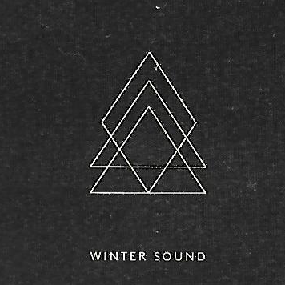

Music Of OMAM
Little Talks
Inspired by an old hous she moved into, Nanna Bryndís Hilmarsdóttir, says the song describes two loving people talking past each other and implies one is deceased, saying "maybe one person isn't really hearing the other one." The song was released as the lead single from their debut studio album, My Head Is An Animal (2011). It was also released on the band's EP Into the Woods. It was written by primary vocalists Nanna Bryndís Hilmarsdóttir and Ragnar Þórhallsson, and produced by Aron Þór Arnarsson.
Chorus:
"Don't listen to a word I say
The screams all sound the same
Though the truth may vary, this
Ship will carry our
Bodies safe to shore."
Little Talks on Youtube.
 Ahay
Ahay
The song is the second track in OMAM's third album, FEVER DREAM (2019).
Chorus:
"You think you know me, but do you really?
Something you do, something you say, oh, we don't talk about it
You think you know me, but do you really?
There's somethin' 'bout you, somethin' 'bout you."
Bridge:
"Oh, you couldn't change this mountain
You've got me out chasing the sound, but I just hear fractions
Oh, you couldn't change this mountain
You've got me out facing the sun, but I just need direction."
Ahay on Youtube.
 Winter Sound
This song is the thirteenth track in OMAM's 2015 album, Beneath the Skin.
Chorus:
"You and I will not be shaken by the winter sound
But my voice is suffocating in the winter sound."
Bridge:
"And you scream, you scratch, you bite, you prey on my heart
And I know that you and I can never be apart."
Winter Sound on Youtube.